PLEASE do not use both of these! It will break the syncing feature and cause it to
create duplicates on both databases. Choose one or the other and then press "Sync Databases" in PartScouter to
copy data to the empty database.
PartScouter
Email
Password
Remember Me
Connect to Local PartScouter Server
IP Address
Creating Memo Fields Report Template
1. Open Alpha while in the P&A_PRI database set
2. Go to Layouts->Reports->Create/edit a report
3. Choose a slot to save the report in
4. Choose "Custom Report"
5. Set all options as shown in this image
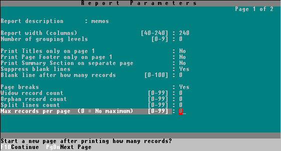
6. Press "F10" key
7. Press "F3" key, choose "Delete Section"
8. Choose a section other than "Detail"
9. Repeat steps 7-8 until all sections are deleted except "Detail"
10. Press "F9" key and choose "Insert Line", then do it one more time, so you have a total of 4 lines
11. Press the up arrow key until you have the top line selected
12. Press * key then spacebar
13. Press "F2" key then choose "select Field"
14. Choose "P&A_PRI"
15. Choose "LOOK_UP_PN"
16. Select the first slot of the next line (Down arrow key, Home key)
17. Repeat steps 12-16 three times but select MODELS, ADVICE, and ATTN instead of LOOK_UP_PN. One for each row
18. Press "Alt + o" keys
19. Set all options as shown in this image
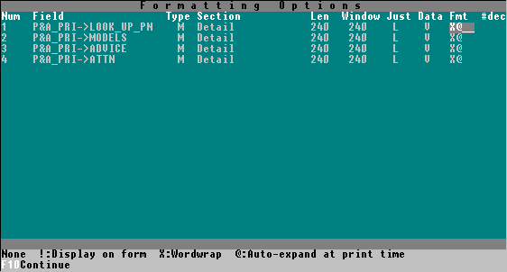
17. Press "F10" key
18. If all went well, you should have a report that looks like this
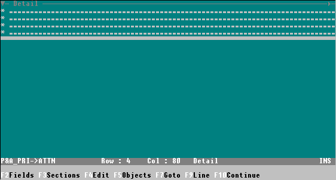
19. Press "F10" key again
20. Choose "Save"
Page 0
Exporting Memo Fields Report
1. Go to Print->Report->memos
2. Set all options as shown in this image
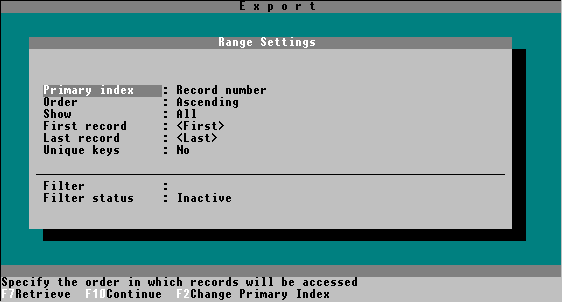
3. Press "F10" key
4. Choose "File" under Standard Mode
5. Type memos in the prompt at the bottom
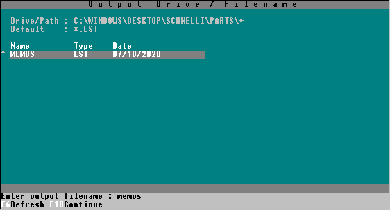
6. Press "F10" key
7. Press "F7" key
8. Choose "PANASONIC KX-P1124"
9. Press "F10" key
10. Once Alpha has finished exporting, press the browse button below and find the MEMOS.LST file it exported
Page 1
Exporting P&A_PRI parent records
1. Go to Utilites->Export data->Character separated ASCII file
2. Note the Drive/Path location at the top, you'll need to remember that later
3. Type P&A_PRI in the prompt at the bottom
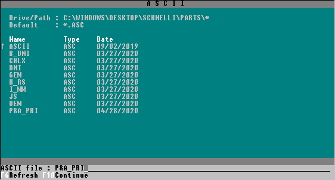
4. Ensure your cursor is in the P&A_PRI column and press "F6" key
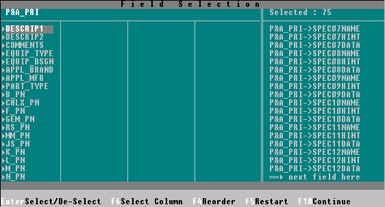
5. Press "F10" key
6. Set all options as shown in this image
7. Press "F10" key
8. Set all options as shown in this image
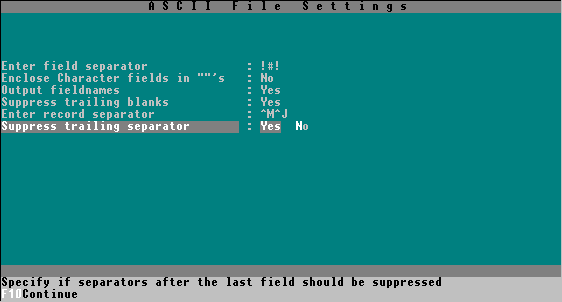
9. Press "F10" key
10. Once Alpha has finished exporting, press the browse button below and find the P&A_PRI.ASC file it exported
Page 2
Exporting B_DNI child records
1. Go to Utilites->Export data->Character separated ASCII file
2. Note the Drive/Path location at the top, you'll need to remember that later
3. Type B_DNI in the prompt at the bottom
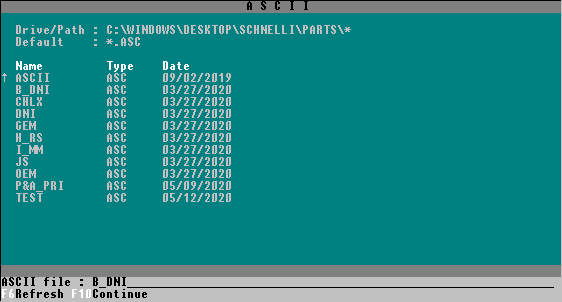
4. Ensure your cursor is in the B_DNI column and press "F6" key
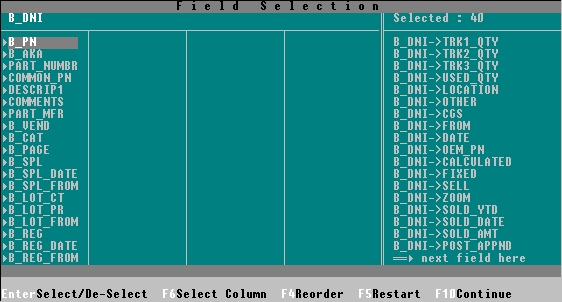
5. Press "F10" key
6. Set all options as shown in this image
7. Press "F10" key
8. Set all options as shown in this image
9. Press "F10" key
10. Once Alpha has finished exporting, press the browse button below and find the B_DNI.ASC file it exported
Page 3
Exporting CHLX child records
1. Go to Utilites->Export data->Character separated ASCII file
2. Note the Drive/Path location at the top, you'll need to remember that later
3. Type CHLX in the prompt at the bottom
4. Ensure your cursor is in the CHLX column and press "F6" key
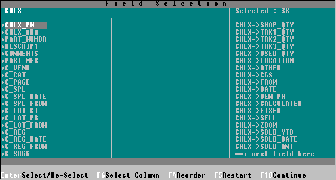
5. Press "F10" key
6. Set all options as shown in this image
7. Press "F10" key
8. Set all options as shown in this image
9. Press "F10" key
10. Once Alpha has finished exporting, press the browse button below and find the CHLX.ASC file it exported
Page 4
Exporting DNI child records
1. Go to Utilites->Export data->Character separated ASCII file
2. Note the Drive/Path location at the top, you'll need to remember that later
3. Type DNI in the prompt at the bottom
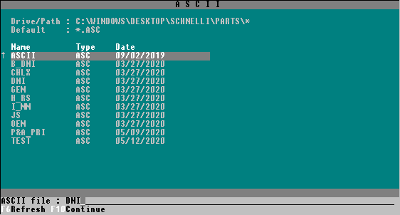
4. Ensure your cursor is in the DNI column and press "F6" key
5. Press "F10" key
6. Set all options as shown in this image
7. Press "F10" key
8. Set all options as shown in this image
9. Press "F10" key
10. Once Alpha has finished exporting, press the browse button below and find the DNI.ASC file it exported
Page 5
Exporting GEM child records
1. Go to Utilites->Export data->Character separated ASCII file
2. Note the Drive/Path location at the top, you'll need to remember that later
3. Type GEM in the prompt at the bottom
4. Ensure your cursor is in the GEM column and press "F6" key
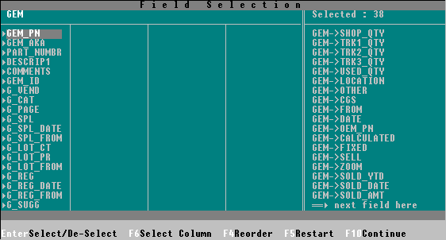
5. Press "F10" key
6. Set all options as shown in this image
7. Press "F10" key
8. Set all options as shown in this image
9. Press "F10" key
10. Once Alpha has finished exporting, press the browse button below and find the GEM.ASC file it exported
Page 6
Exporting H_RS child records
1. Go to Utilites->Export data->Character separated ASCII file
2. Note the Drive/Path location at the top, you'll need to remember that later
3. Type H_RS in the prompt at the bottom
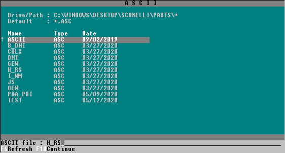
4. Ensure your cursor is in the H_RS column and press "F6" key
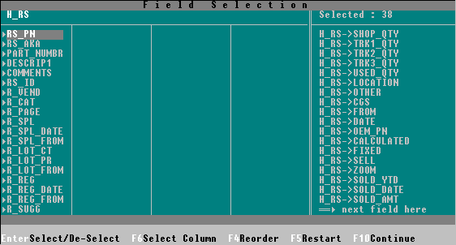
5. Press "F10" key
6. Set all options as shown in this image
7. Press "F10" key
8. Set all options as shown in this image
9. Press "F10" key
10. Once Alpha has finished exporting, press the browse button below and find the H_RS.ASC file it exported
Page 7
Exporting I_MM child records
1. Go to Utilites->Export data->Character separated ASCII file
2. Note the Drive/Path location at the top, you'll need to remember that later
3. Type I_MM in the prompt at the bottom
4. Ensure your cursor is in the I_MM column and press "F6" key
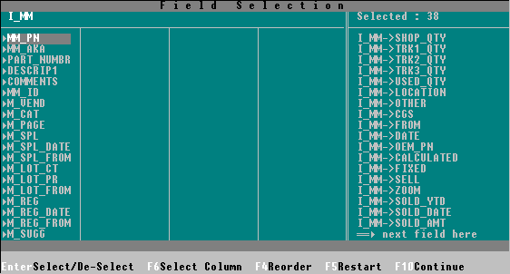
5. Press "F10" key
6. Set all options as shown in this image
7. Press "F10" key
8. Set all options as shown in this image
9. Press "F10" key
10. Once Alpha has finished exporting, press the browse button below and find the I_MM.ASC file it exported
Page 8
Exporting JS child records
1. Go to Utilites->Export data->Character separated ASCII file
2. Note the Drive/Path location at the top, you'll need to remember that later
3. Type JS in the prompt at the bottom
4. Ensure your cursor is in the JS column and press "F6" key
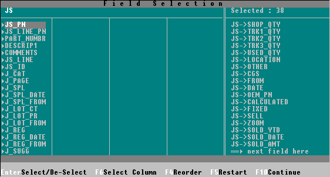
5. Press "F10" key
6. Set all options as shown in this image
7. Press "F10" key
8. Set all options as shown in this image
9. Press "F10" key
10. Once Alpha has finished exporting, press the browse button below and find the JS.ASC file it exported
Page 9
Exporting OEM child records
1. Go to Utilites->Export data->Character separated ASCII file
2. Note the Drive/Path location at the top, you'll need to remember that later
3. Type OEM in the prompt at the bottom
4. Ensure your cursor is in the OEM column and press "F6" key
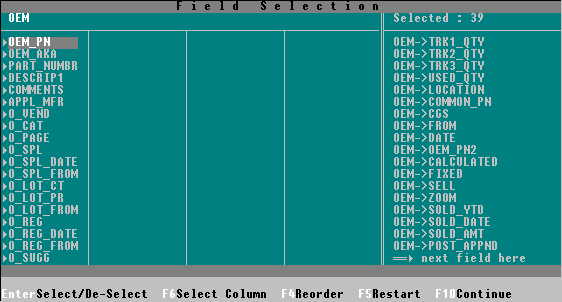
5. Press "F10" key
6. Set all options as shown in this image
7. Press "F10" key
8. Set all options as shown in this image
9. Press "F10" key
10. Once Alpha has finished exporting, press the browse button below and find the OEM.ASC file it exported